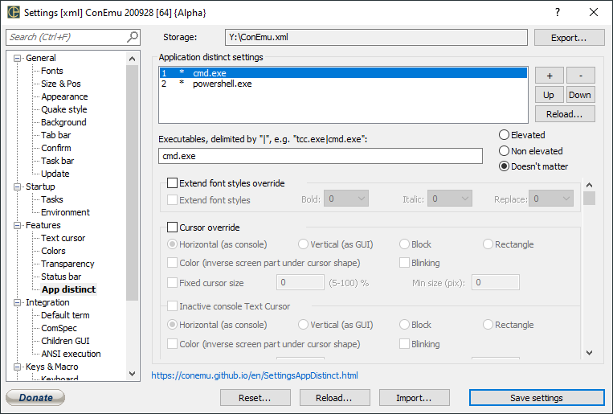

<!--
<i>This page was generated automatically from ConEmu sources</i>
-->
<p><!-- IDD_SPG_APPDISTINCT --> </p>
<h1><a name="Settings:_App_distinct"></a>Settings: App distinct<a href="#Settings:_App_distinct" class="section_anchor"></a></h1>
<p> </p>
<p> </p>
<h2><a name="Application_distinct_settings"></a>Application distinct settings<a href="#Application_distinct_settings" class="section_anchor"></a></h2>
<p><strong>+</strong>  </p>
<p><strong>-</strong>  </p>
<p><strong>Up</strong>  </p>
<p><strong>Down</strong>  </p>
<p><strong>Reload...</strong>  </p>
<ul><li><strong>Elevated</strong> </li><li><strong>Non elevated</strong> </li><li><strong>Elevation don&#x27;t matter</strong> </li></ul><p><strong>Executables, delimited by &quot;|&quot;, e.g. &quot;tcc.exe|cmd.exe&quot;</strong>  </p>
<p>CTEXT </p>
